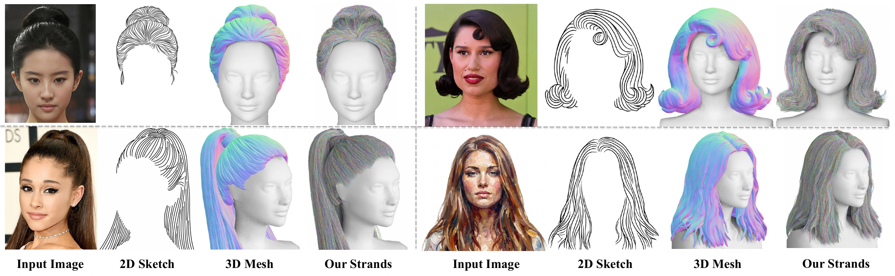
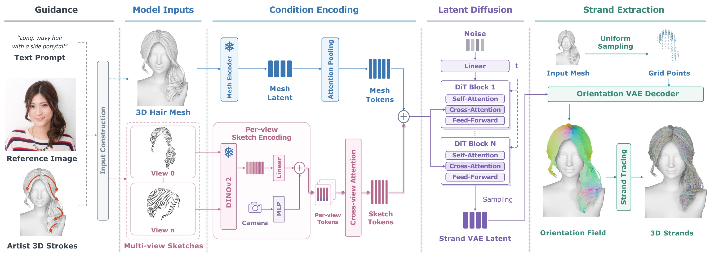
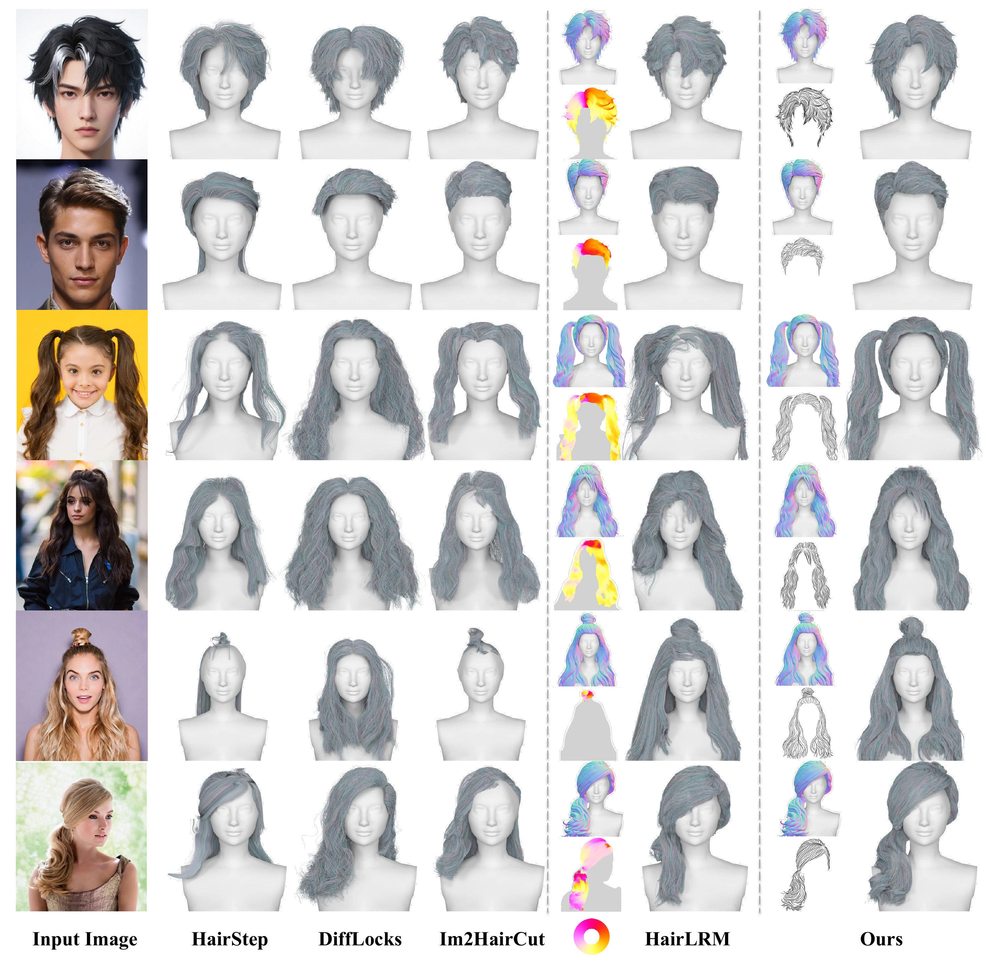

HairFlow: Modeling 3D Hair Strands
with Multi-Modal Conditioned Diffusion
1 Shanghai Jiao Tong University2 LightSpeed Studio

Abstract
Modeling 3D hair strands is challenging due to complex hairstyle geometry, scarce high-quality training data, and incomplete or noisy input observations. Foundation models offer broader hairstyle priors, but their outputs are not directly usable for strand-based rendering and simulation. Existing approaches require costly per-instance optimization to fit hair priors to meshes from foundation models and 2D orientations from specialized predictors trained on limited hair data, restricting efficiency and generalization. We present HairFlow, a multimodal conditioned diffusion framework for efficient and controllable hair strands modeling. HairFlow conditions strand generation on two complementary representations: a coarse mesh that constrains global shape and multi-view sketches that specify local strand flow. HairFlow combines an Orientation VAE with a conditioned diffusion transformer to generate volumetric fields that are traced into explicit strands. To overcome the lack of paired sketch–strand training data, we introduce an automatic synthesis pipeline that generates geometrically aligned multi-view sketches with diverse styles representative of inference-time inputs. Experiments show that HairFlow generates plausible 3D strands that faithfully follow the input conditions across diverse hairstyles, substantially reduces inference time, and supports flexible multimodal control.
Method

Results
12 examples · 4 per page. Select a page to explore more hairstyles.
Drag the mesh or strands to rotate both views together.
Synchronized, pre-rendered views · 8 angles per example · no 3D model download.
Comparisons

Simulation
We simulate wind blowing through the generated hair strands in Unreal Engine.